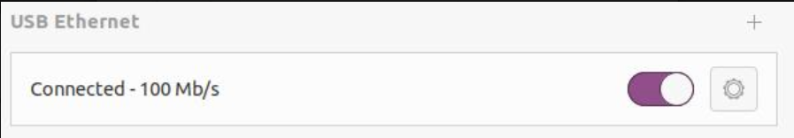
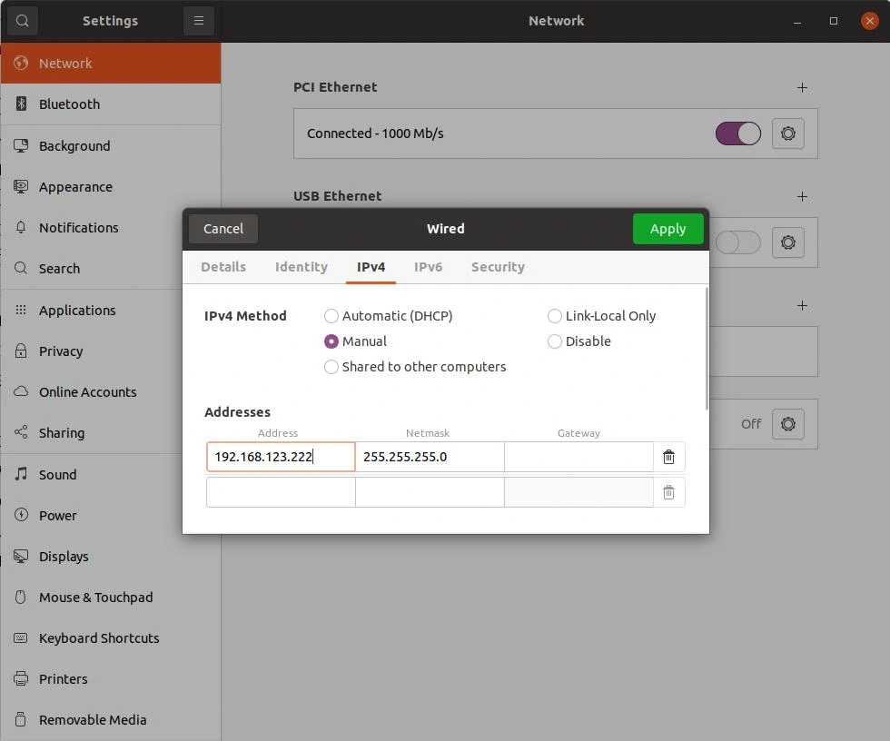
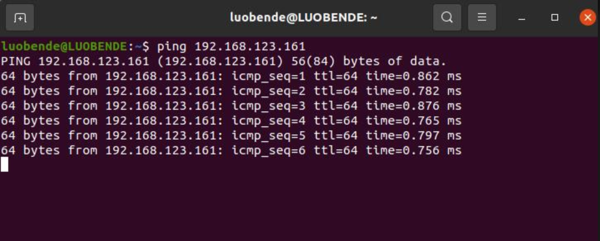
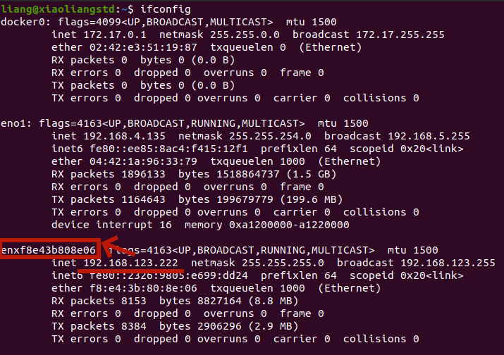

快速开发
本文介绍如何使用 unitree_sdk2 对 G1 进行快速开发应用。
环境依赖
系统环境
推荐在 Ubuntu 20.04 系统下进行开发，暂不支持在 Mac、Windows 系统下进行开发。PC1 运行官方服务，不支持开发；PC2 可以访问开发。
网络环境
将用户计算机与 G1 交换机接入同一网络。建议新用户使用网线与转接线将用户计算机接入 G1 交换机，并将与机器人通信的网卡设置在 192.168.123.X 网段下，推荐使用 192.168.123.99。有经验的用户可自行配置网络环境。
安装与编译
安装 unitree_sdk2
安装步骤：进入 unitree_sdk2 目录，并执行以下命令
cd unitree_sdk2/
mkdir build
cd build
cmake ..
sudo make install
编译自带例子
编译步骤：进入 unitree_sdk2 目录，并按步骤执行以下命令
cd unitree_sdk2
mkdir build
cd build
cmake ..
make
若执行成功，生成的例程会在 unitree_sdk2/build 目录下。
修改网络配置
配置步骤：
- 用网线的一端连接机器人，另一端连接用户电脑，并开启电脑的 USB Ethernet 后进行配置。机器人机载电脑的 IP 地地址为
192.168.123.161，故需将电脑 USB Ethernet 地址设置为与机器人同一网段，如在 Address 中输入192.168.123.222。


为了测试用户电脑与机器人内置电脑是否正常连接，可在终端中输入 ping 192.168.123.161 进行检测，出现下图类似内容即为连接成功。

- 查看
123网段对应的网卡名字，通过ifconfig命令查看123网段的网卡名字，如下图所示：

图中 IP 为 192.168.123.222 对应的网卡名字为 enxf8e43b808e06。用户需要记住此名字，在运行例程时其将会作为必要参数。
例程运行
进入调试模式
按照《快速开始》 的操作流程，确保机器人进入调试模式。
编译运行底层控制例程
注：运行该例程会使 G1 多个关节运动。为了保护机器人，请在运行此例程之前将机器人悬挂起来。
cd unitree_sdk2
cmake -Bbuild
cmake --build build
./build/bin/g1_ankle_swing_example network_interface_name
例程解读参考底层运动参考例程。